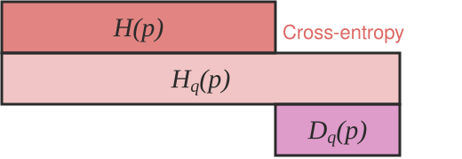

4.6. info theory#
4.6.1. overview#
with small number of points, estimated mutual information is too high
founded with claude shannon 1948
set of principles that govern flow + transmission of info
X is a R.V. on (finite) discrete alphabet ~ won’t cover much continuous
4.6.2. entropy, relative entropy, and mutual info#
4.6.2.1. entropy#
- \[ \begin{align}\begin{aligned}H(X) = - \sum p(x) \:\log p(x) = E[h(p)]$$<!-- --> - $h(p)= - \log(p)$ - $H(p)$ implies p is binary - usually for discrete variables only - assume 0 log 0 = 0 - intuition - higher entropy $\implies$ more uniform - lower entropy $\implies$ more pure 1. expectation of variable $W=W(X)$, which assumes the value $-\log(p_i)$ with probability $p_i$ 2. minimum, average number of binary questions (like is X=1?) required to determine value is between $H(X)$ and $H(X)+1$ 3. related to asymptotic behavior of sequence of i.i.d. random variables - properties - $H(X) \geq 0$ since $p(x) \in [0, 1]$ - funtion of distr. only, not the specific values the RV takes (the support of the RV) - gaussian has max entropy s.t. variance constraint - $$H(Y\vert X)=\sum p(x) H(Y\vert X=x) =- \sum_x p(x) \sum_y p(y\vert x) \log \: p(y\vert x)$$<!-- --> - $$H(X,Y)=H(X)+H(Y\vert X) =H(Y)+H(X\vert Y)$$<!-- -->\\### relative entropy / mutual info\\- *relative entropy* = *KL divergence* - measures distance between 2 distributions - $$D(p\Vert \Vert q) = \sum_x p(x) \log \frac{p(x)}{q(x)} = \mathbb E_p \log \frac{p(X)}{q(X)} = \cblue{\mathbb E_p[-\log q(X)]} - \corange{H(p)} \end{aligned}\end{align} \]
if we knew the true distribution p of the random variable, we could construct a code with average description length \(\corange{H(p)}\)
If, instead, we used the code for a distribution q, we would need H(p) + D(p||q) bits on average to describe the random variable.
- \[ \begin{align}\begin{aligned}D(p\vert \vert q) \neq D(q\vert \vert p)$$<!-- --> - properties - nonnegative - not symmetric - *mutual info I(X; Y)*: how much you can predict about one given the other - $$I(X; Y) = \sum_X \sum_y p(x,y) \log \frac{p(x,y)}{p(x) p(y)} = D(p(x,y)\vert \vert p(x) p(y))$$<!-- --> - $I(X; Y) = -H(X,Y) + H(X) + H(Y))$ - $$=I(Y\vert X)$$<!-- --> - $I(X; X) = H(X)$ so entropy sometimes called *self-information*\\ <img style="width: 420px; max-width: 100%;" src="../assets/entropy_venn_diagram.svg" alt="Entropy Venn diagram"/>\\- cross-entropy: $$H_q(p) = -\sum_x p(x) \: \log \: q(x)\end{aligned}\end{align} \]

4.6.2.2. chain rules#
entropy $\(H(X_1, ..., X_n) = \sum_i H(X_i \vert X_{i-1}, ..., X_1) = H(X_n \vert X_{n-1}, ..., X_1) + ... + H(X_1)\)$
conditional mutual info $\(I(X; Y\vert Z) = H(X\vert Z) - H(X\vert Y,Z)\)$
- \[I(X_1, ..., X_n; Y) = \sum_i I(X_i; Y\vert X_{i-1}, ... , X_1)$$<!-- --> - *conditional relative entropy* $$D(p(y\vert x) \vert \vert q(y\vert x)) = \sum_x p(x) \sum_y p(y\vert x) \log \frac{p(y\vert x)}{q(y\vert x)}\]
- \[ \begin{align}\begin{aligned}D(p(x, y)\vert \vert q(x, y)) = D(p(x)\vert \vert q(x)) + D(p(y\vert x)\vert \vert q(y\vert x))$$<!-- -->\\### axiomatic approach\\- *fundamental theorem of information theory* - it is possible to transmit information through a noisy channel at any rate less than channel capacity with an arbitrarily small probability of error - to achieve arbitrarily high reliability, it is necessary to reduce the transmission rate to the *channel capacity* - uncertainty measure axioms 1. $$H(1/M,...,1/M)=f(M)$$ is a montonically increasing function of M 2. $f(ML) = f(M)+f(L)$ where $M,L \in \mathbb{Z}^+$ 3. *grouping axiom* 4. $H(p,1-p)$ is continuous function of $p$ - $$H(p_1,...,p_M) = - \sum p_i \log p_i = E[h(p_i)]$$<!-- --> - $h(p_i)= - \log(p_i)$ - only solution satisfying above axioms - H(p,1-p) has max at 1/2 - *lemma* - Let $$p_1,...,p_M$$ and $$q_1,...,q_M$$ be arbitrary positive numbers with $\sum p_i = \sum q_i = 1$. Then $-\sum p_i \log p_i \leq - \sum p_i \log q_i$. Only equal if $$p_i = q_i \: \forall i\end{aligned}\end{align} \]
intuitively, \(\sum p_i \log q_i\) is maximized when \(p_i=q_i\), like a dot product
- \[H(p_1,...,p_M) \leq \log M$$ with equality iff all $p_i = 1/M$ - $H(X,Y) \leq H(X) + H(Y)$ with equality iff X and Y are independent - $$I(X,Y)=H(Y)-H(Y\vert X)$$<!-- --> - sometimes allow p=0 by saying 0log0 = 0 - information $I(x)=\log_2 \frac{1}{p(x)}=-\log_2p(x)$ - reduction in uncertainty (amount of surprise in the outcome) - if the probability of event happening is small and it happens the info is large - entropy $H(X)=E[I(X)]=\sum_i p(x_i)I(x_i)=-\sum_i p(x_i)\log_2 p(x_i)$ - information gain $$IG(X,Y)=H(Y)-H(Y\vert X)\]
- \[=-\sum_j p(x_j) \sum_i p(y_i\vert x_j) \log_2 p(y_i\vert x_j)$$<!-- --> - parts 1. random variable X taking on $$x_1,...,x_M$$ with probabilities $$p_1,...,p_M\]
code alphabet = set $\(a_1,...,a_D\)\( . Each symbol \)x_i\( is assigned to finite sequence of code characters called *code word* associated with \)x_i$
objective - minimize the average word length \(\sum p_i n_i\) where \(n_i\) is average word length of \(x_i\)
code is uniquely decipherable if every finite sequence of code characters corresponds to at most one message
instantaneous code - no code word is a prefix of another code word
4.6.3. basic inequalities#
4.6.3.1. jensen’s inequality#
convex - function lies below any chord
has positive 2nd deriv
linear functions are both convex and concave
Jensen’s inequality - if f is a convex function and X is an R.V., \(f(E[X]) \leq E[f(X)]\)
if f strictly convex, equality \(\implies X=E[X]\)
implications
information inequality $\(D(p\vert \vert q) \geq 0\)$ with equality iff p(x)=q(x) for all x
- \[ \begin{align}\begin{aligned}H(X) \leq \log \vert X\vert $$ where \|X\| denotes the number of elements in the range of X, with equality if and only X has a uniform distr - $$H(X\vert Y) \leq H(X)$$ - information can't hurt - $$H(X_1, ..., X_n) \leq \sum_i H(X_i)$$<!-- -->\\## [mdl](https://homepages.cwi.nl/~pdg/ftp/mdlintro.pdf)\\- chapter 1: overview - explain data given limited observations - benefits - occam's razor - no overfitting (can pick both form of model and params), without need for ad hoc penalties - bayesian interpretation - no need for underlying truth - description - in terms of some description method - e.g. a python program which prints a sequence then halts = Kolmogorov complexity - invariance thm - as long as sequence is long enough, choice of programming language doesn't matter) - (kolmogorov 1965, chaitin 1969, solomonoff 1964) - not computable in general - for small samples in practice, depends on choice of programming language - in practice, we don't use general programming languages but rather select a description method which we know we can get the length of the shortest description in that class (e.g. linear models) - trade-off: we may fail to minimally compress some sequences which have regularity - knowing data-generating process can help compress (e.g. recording times for something to fall from a height, generating digits of $\pi$ via taylor expansion, compressing natural language based on correct grammar) - simplest version - let $\corange{\theta}$ be the <span class="corange">model</span> and $\cblue{X}$ be the <span class="cblue">data</span> - 2-part MDL: minimize $$\corange{L(\theta)} + \cblue{L(X\vert \theta)}\end{aligned}\end{align} \]
- \[\cblue{L(X\vert \theta)} = - \log P(X\vert \theta)$$ - <span class="cblue">Shannon code</span> - $\corange{L(\theta)}$ - hard to get this, basic problem with 2-part codes - have to do this for each model, not model-class (e.g. different linear models with same number of parameters would have different $L(\theta)$ - stochastic complexity ("refined mdl"): $$\bar{L}(X\vert \theta)$$ - only construct one code - ex. $$\bar L(X\vert \theta) = \vert \theta\vert _0 + L(X\vert \theta)$$ - like 2-part code but breaks up $\theta$ space into different sets (e.g. same number of parameters) and assigns them equal codelength - normalized maximum likelihood - most recent version - select from among a set of codes - chapter 2.2.1 background - in mdl, we only work with prefix codes (i.e. no codeword is a prefix of any other codeword) - these are uniquely decodable - in fact, any uniquely decodable code can be rewritten as a prefix code which achieves the same code length - chapter 2.2.2: **probability mass functions correspond to codelength functions** - coding: $x \sim P(X)$, codelengths $\ell(x)$ - **Kraft inequality**: $\sum_x 2^{-\ell(x)} \leq 1$ - given a code $C$ and a prob distr. $P$, we can construct a code so short codewords get high probs and vice versa - given $P$, $$\exists C, \forall z \: L_C(z) \leq \lceil -\log P(z) \rceil\]
given $\(C'\)\(, \)\(\exists P' \: \forall z -\log P(z) = L_{C'}(z)\)$
we redefine codelength so it doesn’t require actual integer lengths
we don’t care about the actual encodings, only the codelengths
given a sample space \(\mathcal Z\), the set of all codelength functions \(L_\mathcal Z\) is the set of functions \(L\) on \(\mathcal Z\) where \(\exists \,Q\) (distr), such that \(\sum_z Q(z) \leq 1\) and \(\forall z,\; L(z) = -\log Q(z)\)
uniform distr. - every codeword just has same length (fixed-length)
we usually assume we are encoding a sequence \(x^n\) which is large, so the rounding becomes negligible
ex. encoding integers: send \(\log k\) zeros, then add a 1, then uniform code from 0 to \(2^{\log k}\)
Given \(P(X)\), the codelength function \(L(X) = -\log P(X)\) minimizes expected code length for the variable \(X\)
chapter 2.2.3 - the information inequality: \(E_P[-\log Q(X)] > E_P[-\log P(X)]\)
if \(X\) was generated by \(P\), then codes with length \(-\log P(X)\) give the shortest encodings on average
not surprising - in a large sample, X will occur with frequency proportial to \(P(X)\), so we want to give it a short codelength \(-\log P(X)\)
consequently, ideal mean length = \(H(X)\)
chapter 2.4: crude mdl ex. pick order of markov chain by minimizing $\(\corange{L(H)} + \cblue{L(D\vert H)}\)\( where \)\cblue{D}\( is <span class="cblue">data</span>, \)\corange{H}$ is hypothesis
we get to pick codes for \(L(H)\) and $\(L(D\vert H)\)$
let $\(L(x^n\vert H) = -\log P(x^n\vert H)\)$ (length of data is just negative log-likelihood)
for \(L(H)\), describe length of chain \(k\) with code for integers, then \(k\) parameters between 0 and 1 by describing the counts generated by the params in n samples - this tends to be harder to do well
chapter 2.5: universal codes + models
note: these codes are only universal relative to the set of considered codes \(\mathcal L\)
universal model - prob. distr corresponding to universal codes
(different from how we use model in statistics)
given a set of codes $\(\mathcal L = \{ L_1, L_2, ... \}\)\(, given a squences \)x^n\(, one of the codes \)L \in \mathcal L\( has the shortest length for that sequence \)\bar L(x^n)$
however, we have to pick one \(L\), before we see \(x^n\)
universal code - one code such that no matter which \(x^n\) arrives, length is not much longer than the shortest length among all considered codes
ex. 2-part codes: first send bits to pick among codes, then use the selected code to encode \(x^n\) - overhead is small because it doesn’t depend on \(n\)
among countably infinite codes, can still send \(k\) to index the code, although \(k\) can get very large
ex. bayesian universal model - assign prior distr to codes
ex. nml is an optimal (minimizes worst-case regret) universal model
$\(\bar P_{\text{nml}} (x^n) = \frac{\cblue{P(x^n \vert \hat \theta (x^n))}}{\corange{\sum_{z^n \in \mathcal X^n} P(z^n \vert \hat \theta (z^n))}}\)$
literally a normalized likelihood
regret of \(\bar P\) relative to \(M\): \(−\log \bar P(x^n)− \min_{P \in M} -\log P(x^n )\)
measures the performance of universal models relative to a set of candidate sources M
\(\bar P\) is a probability distribution on \(\mathcal X^n\) (\(P\) is not necessarily in \(M\))
when evaluating a code, we may look at the worst regret over all \(x^n\), or the average